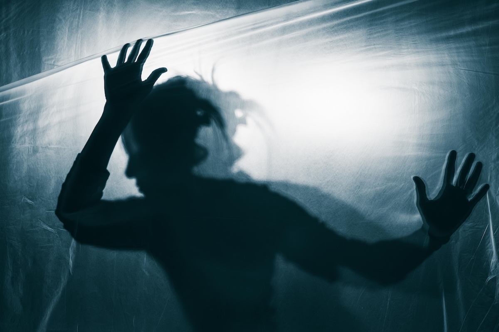

Rüyalarımızda Neden Koşamayız veya Bağıramayız?

Birçok insan rüyasında tehlikeli bir durumdan kaçmaya çalıştığını ama bir türlü koşamadığını ya da yardım istemek için bağırmaya çalıştığını fakat sesinin çıkmadığını deneyimlemiştir. Bu tür rüyalar genellikle oldukça gerçekçi hissedilir ve kişi uyandığında bile etkisi bir süre devam eder.
Peki rüyalarımızda neden koşamayız ya da bağırmakta zorlanırız? Bu durum sadece psikolojik bir sembol mü yoksa beynimizin çalışma biçimiyle ilgili bilimsel bir açıklaması var mı? Bu yazıda rüyalarda yaşanan bu ilginç durumun arkasındaki bilimsel ve psikolojik nedenleri detaylı şekilde inceleyeceğiz.
Rüyada Koşamamak ve Bağıramamak Çok Yaygın Bir Deneyimdir
Rüya araştırmaları, insanların büyük bir kısmının hayatlarında en az birkaç kez bu tür rüyalar gördüğünü gösteriyor. Özellikle şu durumlar oldukça yaygındır:
- Birinden kaçarken bacakların ağırlaşması
- Yerinde sayarak koşmaya çalışmak
- Bağırmak istemek ama sesin çıkmaması
- Yardım çağırmak isterken kelimelerin boğazda düğümlenmesi
Bu rüyalar genellikle stres, korku veya tehdit içeren senaryolarla birlikte ortaya çıkar.
Beynimiz Uyurken Vücudu Neden Kilitler?
Rüyada hareket edememenin en önemli nedeni, uykunun belirli bir evresinde beynin vücudu geçici olarak “devre dışı bırakmasıdır”.
İnsanlar rüyaların en yoğun yaşandığı REM uykusu sırasında kas felcine benzer bir durum yaşar. Buna bilimsel olarak REM atonisi denir.
REM atonisi şu nedenle oluşur:
- Beyin rüya üretmeye devam eder
- Ancak omurilikteki sinir sinyalleri baskılanır
- Kaslara hareket komutu iletilmez
Bu mekanizma aslında bir güvenlik sistemidir. Eğer bu sistem olmasaydı rüyamızda yaptığımız hareketleri gerçek hayatta da yapabilirdik.
Örneğin rüyasında koşan biri gerçekten yataktan kalkıp koşmaya başlayabilirdi.
Rüyada Koşamamanın Sebebi: Beyin ve Beden Uyumsuzluğu
Rüyada koşmaya çalıştığınızda beyniniz hareket etmeyi hayal eder, ancak bedeniniz REM atonisi nedeniyle hareket edemez. Bu nedenle rüyada şu deneyimler ortaya çıkar:
- Bacaklar çok ağırmış gibi hissedilir
- Yavaş hareket ediyormuşsunuz gibi algılanır
- Koşmaya çalıştıkça daha da yavaşlarsınız
Aslında bu, beynin hareket komutu üretmesi fakat bedenin buna cevap verememesinin rüya içindeki yansımasıdır.
Bağıramamak: Ses Neden Çıkmaz?
Rüyada bağırmaya çalışırken sesin çıkmaması da benzer bir mekanizmanın sonucudur.
Normalde konuşma ve bağırma için şu kaslar gerekir:
- Diyafram
- Ses telleri
- Boğaz kasları
- Ağız ve dil kasları
REM uykusunda bu kasların çoğu da baskılanmış durumdadır. Bu yüzden rüyada bağırmaya çalıştığınızda:
- Ses çıkmaz
- Çok kısık bir ses duyulur
- Kelimeler anlaşılmaz hale gelir
Beyin bağırdığını düşünür, fakat vücut bu eylemi gerçekleştiremez.
Psikolojik Yorumlar: Kontrol Kaybı ve Stres
Psikoloji alanında rüyada koşamamak ve bağırmamak genellikle kontrol kaybı duygusuyla ilişkilendirilir.
Bu tür rüyalar şu durumlarda daha sık görülebilir:
- Yoğun stres dönemleri
- Hayatta sıkışmış hissetmek
- Bir problemden kaçamamak
- Kendini ifade etmekte zorlanmak
- Bastırılmış duygular
Rüyada kaçamamak bazen gerçek hayatta kaçamadığımız sorunların sembolik bir yansıması olabilir.
Tehdit Rüyaları ve Evrimsel Teori
Bazı bilim insanlarına göre bu tür rüyalar beynin tehdit simülasyonu yapmasının bir sonucudur.
Bu teoriye göre rüyalar:
- Tehlikeli durumları zihinsel olarak prova etmemizi sağlar
- Beyni olası tehditlere karşı hazırlar
- Stresli senaryoları güvenli bir ortamda deneyimlememize imkan verir
Ancak REM atonisi nedeniyle bu senaryolar sırasında hareket etmek zorlaşır.
Uyku Felci ile Karıştırılabilir
Bazı insanlar rüyada hareket edememeyi uyku felci ile karıştırır.
Ancak bu iki durum farklıdır:
Rüyada koşamamak
- Rüyanın içinde yaşanır
- Genellikle fark edilmeden devam eder
Uyku felci
- Kişi uyanıktır
- Vücut hareket edemez
- Bazen korkutucu halüsinasyonlar görülebilir
Uyku felci birkaç saniye veya dakika sürebilir.
Rüyalar Neden Bu Kadar Gerçekçi Hissedilir?
Rüyada koşamamak veya bağırmamak deneyimi çoğu zaman son derece gerçekçi hissedilir. Bunun nedeni rüyalar sırasında beynin bazı bölümlerinin oldukça aktif olmasıdır.
Özellikle şu bölgeler yoğun çalışır:
- Duygularla ilgili beyin merkezleri
- Görsel korteks
- Hafıza ile ilgili bölgeler
Buna karşılık mantık ve karar verme ile ilgili alanlar daha az aktiftir. Bu nedenle rüyada yaşanan olaylar garip olsa bile genellikle sorgulanmaz.
Bu Tür Rüyalar Normal mi?
Evet. Rüyada koşamamak veya bağırmamak oldukça normal bir deneyimdir. Çoğu insan hayatının farklı dönemlerinde bu tür rüyalar görür.
Genellikle şu durumlarda daha sık ortaya çıkar:
- Yoğun stres
- Uykusuzluk
- Düzensiz uyku
- Anksiyete
- Travmatik deneyimler
Bu rüyalar genellikle zararsızdır ve psikolojik bir bozukluk anlamına gelmez.
Daha Az Rahatsız Edici Rüyalar İçin Ne Yapılabilir?
Rüyaların içeriğini tamamen kontrol etmek mümkün olmasa da uyku kalitesini artırmak rüyaların daha dengeli olmasına yardımcı olabilir.
Şu alışkanlıklar faydalı olabilir:
- Düzenli uyku saatleri oluşturmak
- Yatmadan önce ekran kullanımını azaltmak
- Meditasyon veya nefes egzersizleri yapmak
- Stres yönetimi teknikleri uygulamak
Bazı insanlar lucid rüya (bilinçli rüya) pratiğiyle rüyalarının içeriğini kısmen kontrol edebildiklerini de belirtir.
Sonuç
Rüyalarımızda koşayamamak veya bağıramamak çoğu zaman korkutucu bir deneyim gibi görünse de aslında beynimizin uyku sırasında kendini korumak için geliştirdiği doğal bir mekanizmanın sonucudur.
REM uykusu sırasında oluşan kas kilidi, rüyalarımızı fiziksel olarak gerçekleştirmemizi engeller. Bu nedenle rüyada kaçmaya çalıştığımızda bacaklarımız ağırlaşır, bağırmaya çalıştığımızda ise sesimiz çıkmaz.
Aynı zamanda bu rüyalar bazen stres, baskı veya kontrol kaybı gibi duyguların da sembolik bir yansıması olabilir.
Bir dahaki sefere rüyanızda koşamadığınızı veya sesinizin çıkmadığını fark ederseniz, bunun beyninizin karmaşık ama oldukça etkileyici çalışma biçiminin bir sonucu olduğunu hatırlayabilirsiniz.